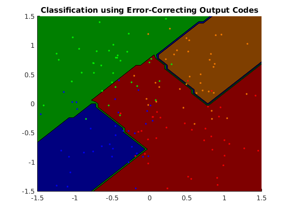
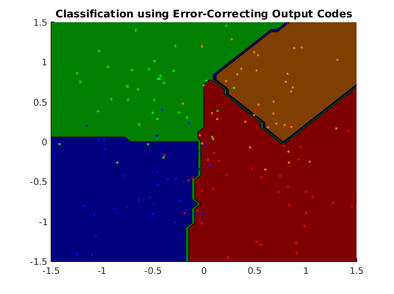
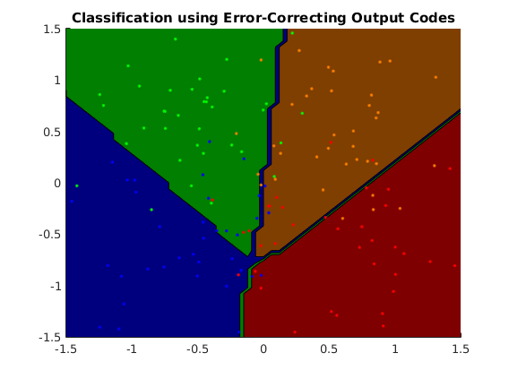

Contents
Description of demo_multiclass_ECOC.m
Demonstration of multiclass classification task using error-correcting codes where a binaryclass subclassifier is trained for each bit position unique code representation of each class.
clear all close all generateData_4grid
usage of ECOC using 1-vs-all coding matrix
options_ec1 = []; options_ec1.codeDesign = 'ova'; options_ec1.decodeDesign = 'hm'; options_ec1.subModel = @ml_binaryclass_logistic; model_ec1 = ml_multiclass_ECOC(Xtrain, ytrain, options_ec1); yhat_ec1 = model_ec1.predict(model_ec1, Xtest); testError_ec1 = mean(yhat_ec1 ~= ytest); fprintf('Averaged misclassification test error with %s is: %.3f\n', ... model_ec1.name, testError_ec1); figure; plotClassifier(Xtrain, ytrain, model_ec1);
Averaged misclassification test error with Classification using Error-Correcting Output Codes is: 0.262
usage of ECOC using 1-vs-1 coding matrix
options_ec2 = []; options_ec2.codeDesign = 'ovo'; options_ec2.decodeDesign = 'hm'; options_ec2.subModel = @ml_binaryclass_logistic; model_ec2 = ml_multiclass_ECOC(Xtrain, ytrain, options_ec2); yhat_ec2 = model_ec2.predict(model_ec2, Xtest); testError_ec2 = mean(yhat_ec2 ~= ytest); fprintf('Averaged misclassification test error with %s is: %.3f\n', ... model_ec2.name, testError_ec2); figure; plotClassifier(Xtrain, ytrain, model_ec2);
Averaged misclassification test error with Classification using Error-Correcting Output Codes is: 0.076

usage of ECOC using exhaustive coding matrix
options_ec3 = []; options_ec3.codeDesign = 'exh'; options_ec3.decodeDesign = 'hm'; options_ec3.subModel = @ml_binaryclass_logistic; model_ec3 = ml_multiclass_ECOC(Xtrain, ytrain, options_ec3); yhat_ec3 = model_ec3.predict(model_ec3, Xtest); testError_ec3 = mean(yhat_ec3 ~= ytest); fprintf('Averaged misclassification test error with %s is: %.3f\n', ... model_ec3.name, testError_ec3); figure; plotClassifier(Xtrain, ytrain, model_ec3);
Averaged misclassification test error with Classification using Error-Correcting Output Codes is: 0.156
usage of ECOC using random coding matrix
options_ec4 = []; options_ec4.codeDesign = 'rnd'; options_ec4.decodeDesign = 'hm'; options_ec4.subModel = @ml_binaryclass_logistic; model_ec4 = ml_multiclass_ECOC(Xtrain, ytrain, options_ec4); yhat_ec4 = model_ec4.predict(model_ec4, Xtest); testError_ec4 = mean(yhat_ec4 ~= ytest); fprintf('Averaged misclassification test error with %s is: %.3f\n', ... model_ec4.name, testError_ec4); figure; plotClassifier(Xtrain, ytrain, model_ec4);
Averaged misclassification test error with Classification using Error-Correcting Output Codes is: 0.164